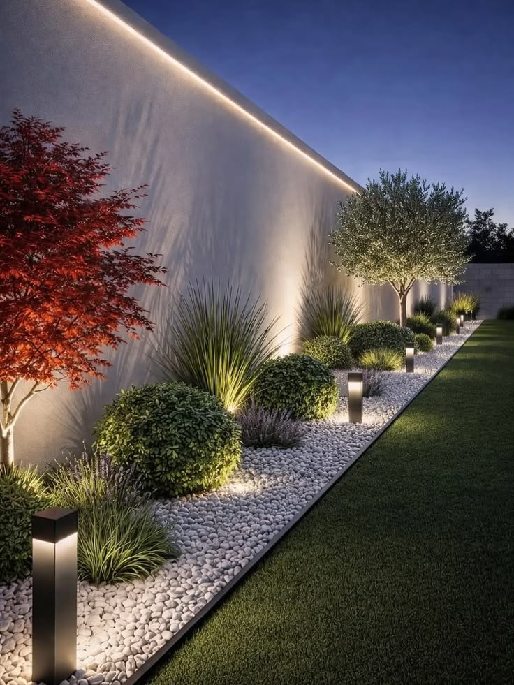
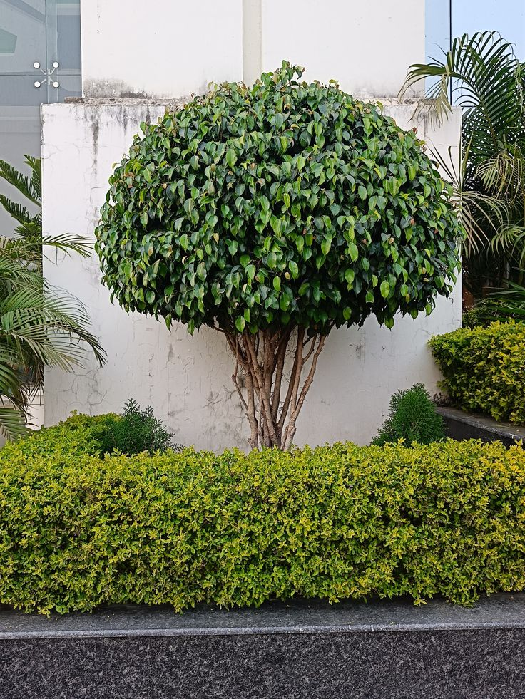

PAISAGISMO
Jardim residencial
Projeto de paisagismo com plantio de árvores, plantas ornamentais e acabamento com pedras brancas.
O QUE FAZEMOS
Cuidados periódicos para manter seu jardim sempre bonito e saudável.
Podas de plantas, arbustos e árvores, mantendo o espaço organizado.
Cuidados para fornecer os nutrientes necessários para suas plantas.
Planejamento e transformação de espaços através do paisagismo.
Plantas para deixar seus ambientes ainda mais bonitos.
Limpeza e controle da vegetação de terrenos e áreas externas.
Cuidados e manutenção de árvores para manter o espaço seguro e organizado.
Encomenda de plantas específicas conforme a necessidade do cliente.
Aplicação de produtos para auxiliar no controle de pragas e doenças das plantas.
NOSSO TRABALHO

Projeto de paisagismo com plantio de árvores, plantas ornamentais e acabamento com pedras brancas.

Trabalho de poda e manutenção para manter árvores e arbustos organizados e bem cuidados.
SOBRE A EMPRESA
A Arte e Flores Paisagismo atua em Londrina oferecendo serviços de jardinagem, paisagismo e manutenção de áreas verdes.
Cada trabalho é realizado com atenção aos detalhes, buscando valorizar o espaço e manter jardins, plantas e áreas externas sempre bem cuidados.
Cuidado e manutenção para seus espaços verdes.
Transformação de ambientes através da natureza.
Atenção aos detalhes em cada trabalho.
FALE CONOSCO
ATENDIMENTO
Londrina - Paraná